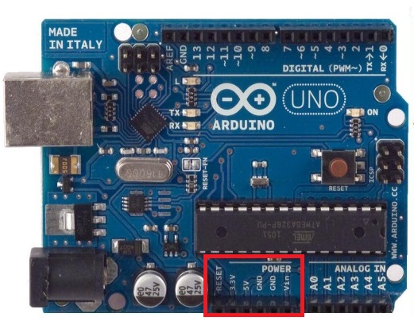
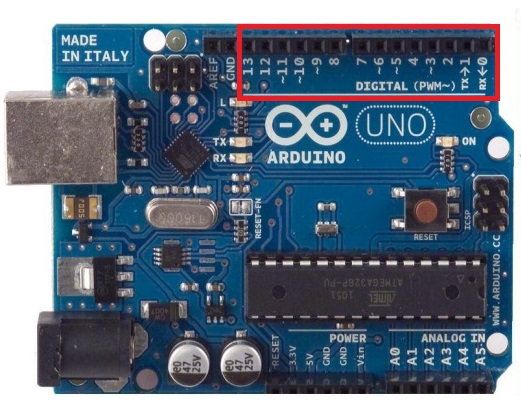
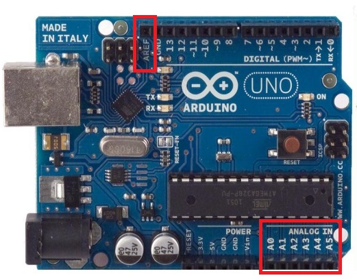

Arduino es una plataforma de desarrollo Hardware que cuenta con pines E/S para comunicarse con el exterior. Estos pines E/S tienen características especiales que los hacen propicios para una u otra tarea en función del tipo de pin. Estas E/S pueden englobarse en 3 tipos básicos, E/S analógicas, E/S digitales y E/S para la comunicación serie. Existen también pines de propósito especiales como salidas de reloj u osciladores y pines de alimentación con los que podemos suministrar diferentes tensiones a placas externas.
Inicio
CONOCIENDO LA PLACA
POWER, INPUTS AND OUTPUTS
Pines de alimentation (Power Pins)

Bien alimentemos al arduino mediante la conexión USB o mediante una fuente externa (recomendada de 7-12V), vamos a tener unas salidas de tensión continua debido a unos reguladores de tensión y condensadores de estabilización.
Estos pines son:
- VIN: se trata de la fuente tensión de entrada que contendrá la tensión a la que estamos alimentando al Arduino mediante la fuente externa.
- 5V: fuente de tensión regulada de 5V, esta tensión puede venir ya sea de pin VIN a través de un regulador interno, o se suministra a través de USB o de otra fuente de 5V regulada.
- 3.3V: fuente de 3.3 voltios generados por el regulador interno con un consumo máximo de corriente de 50mA.
- GND: pines de tierra.
DIGITAL INPUTS/OUTPUTS.

Cada uno de los 14 pines digitales se puede utilizar como una entrada o salida. Cada pin puede proporcionar o recibir un máximo de 40 mA y tiene una resistencia de pull-up (desconectado por defecto) de 20 a 50 kOhm. Además, algunos pines tienen funciones especializadas como:
- Pin 0 (RX) y 1 (TX). Se utiliza para recibir (RX) y la transmisión (TX) de datos serie TTL.
- Pin 2 y 3. Interrupciones externas. Se trata de pines encargados de interrumpir el programa secuencial establecido por el usuario.
- Pin 3, 5, 6, 9, 10 y 11. PWM (modulación por ancho de pulso).Constituyen 8 bits de salida PWM con la función analogWrite ().
- Pin 10 (SS), 11 (MOSI), 12 (MISO), 13 (SCK). Estos pines son de apoyo a la comunicación SPI.
- Pin 13. LED. Hay un LED conectado al pin digital 13. Cuando el pin es de alto valor, el LED está encendido, cuando el valor está bajo, es apagado.
ANALOG INPUTS
El Arduino posee 6 entradas analógicas, etiquetadas desde la A0 a A5, cada una de las cuales ofrecen 10 bits de resolución (es decir, 1024 estados). Por defecto, tenemos una tensión de 5V, pero podemos cambiar este rango utilizando el pin de AREF y utilizando la función analogReference(), donde le introducimos una señal externa de continua que la utilizara como referencia.
Obra publicada con Licencia Creative Commons Reconocimiento Compartir igual 4.0